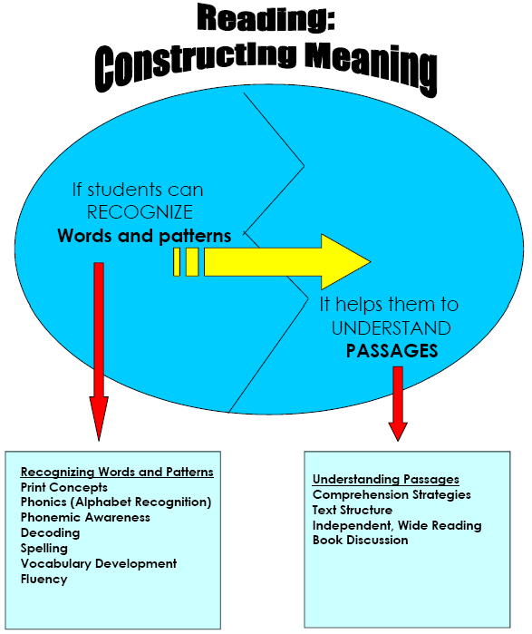

Activity 1 - Comprehension What is reading and reading comprehension?
and
What do you know about reading?
Go to the What do you know about READING? handout and respond to the questions.
Reflect as to when you were a child and where you are now as a reader. Over the years, you have read a variety of book genres and discovered which are your favorites. We tend to like books that are interesting and exciting or books that we can relate to. You have been taught, or learned on your own, how to compare stories and writing styles as well as find similarities and differences in stories or articles. As adults, we also realize the importance of reading in terms of gaining knowledge. Through experience we have developed as readers.
The challenge for you as a teacher is to help students gain the skills necessary to develop and become lifetime readers. Many students don't like to read, or don't have the skills or experience needed to read material at their grade level. It will be up to you to understand how to introduce or prepare your students for the reading processes necessary for your classroom and beyond.
Much of what you do in the classroom will result from your personal understanding of the reading process. The understanding of the mental processes involved as a reader can help you make decisions about instruction in your classes. There are as many options available to you as the diverse needs of your students.
The definition of literacy has changed. It's not just being able to sign your name. Education today goes beyond presenting students with information and must ensure that students retain important information. Students must understand topics and actively use the knowledge they gain.
The National Institute for Literacy defines READING as a complex system of deriving meaning from print that requires all of the following:
|
READING is the process of constructing meaning from written text. In order for a student to read or recognize words, they must have or be able to do the following:
a. utilize print concepts - be aware of print in everyday environment and how printed language works (i.e. what a word is, that print is read from left to right, that oral language can be written and then read, etc.)b. recognize the letters of the alphabet (phonics) - recognize letters and names of the letters of the alphabet and the sounds they represent
c. be aware of phonemes - phonemes are the smallest linguistic sound in a word
d. decode - have the skills and knowledge by which a reader translates printed words into speech
e. spell - have the ability to perceive sound sequences in words and link those sounds to letters
f. vocabulary - all the words a student uses and understands
g. read fluently - read with automaticity

COMPREHENSION is "the capacity for understanding fully; the act or action of grasping with the intellect..." (Webster's Dictionary)
Comprehension is not only identifying words on a page, but having the capacity to understand those thoughts and ideas that those words convey.
|
What must a student do to be able to understand what is being read? a. comprehend - recognize words and assign meaning b. know text structure - determine whether the text is a recipe, a story, an article, etc. c. read independently - independently recognize words and assign meaning d. discuss books - students should be actively involved in responding to books being shared in give and take conversations |
COMPREHENSION REGULATION
Comprehension regulation incorporates the use of preplanned strategies used to understand text. It is a plan for getting the most out of reading and gives you an idea of what to expect from text.
An active reader can get an idea of what a writer is trying to communicate by:
- Setting goals based on the purpose for reading
- Previewing the text to make predictions
- Self-questioning
- Scanning
- Summarizing
- Relating new information to old
An accomplished reader is able to do this on his own, sometimes automatically, but a struggling reader needs to be taught these tools.
THE POINT IS:
READING "CLICKS" FOR DIFFERENT KIDS AT VARIOUS AGES AND GRADE LEVELS. THE USE OF DIFFERENT STRATEGIES, TECHNIQUES AND AN UNDERSTANDING OF THE READING PROCESS MAY GIVE YOU THE TOOLS TO OPEN THE READING DOOR.
YOU MAY BE THE ONE TEACHER THAT MAKES IT "CLICK" FOR A CHILD.